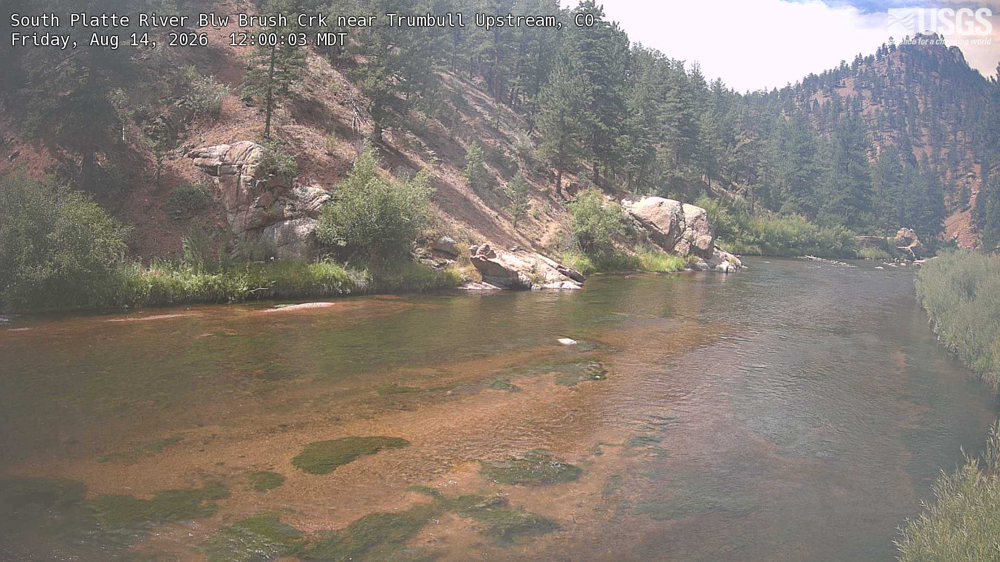
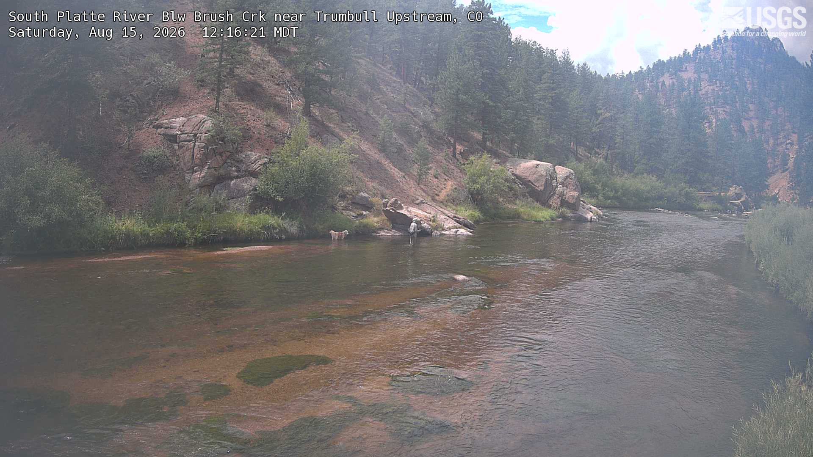
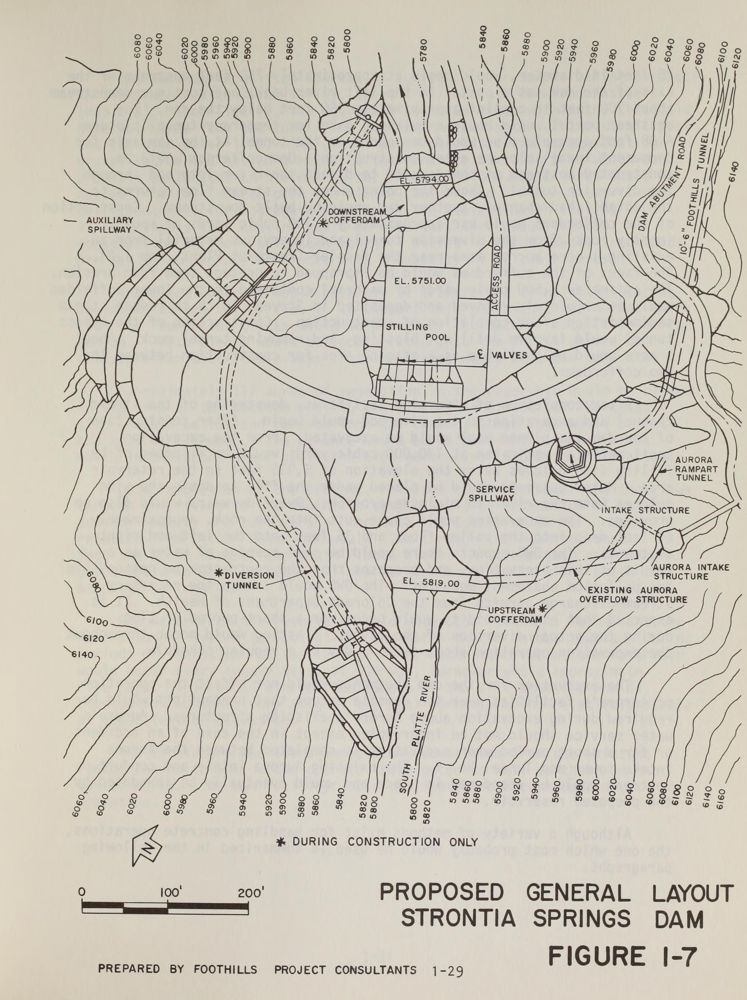
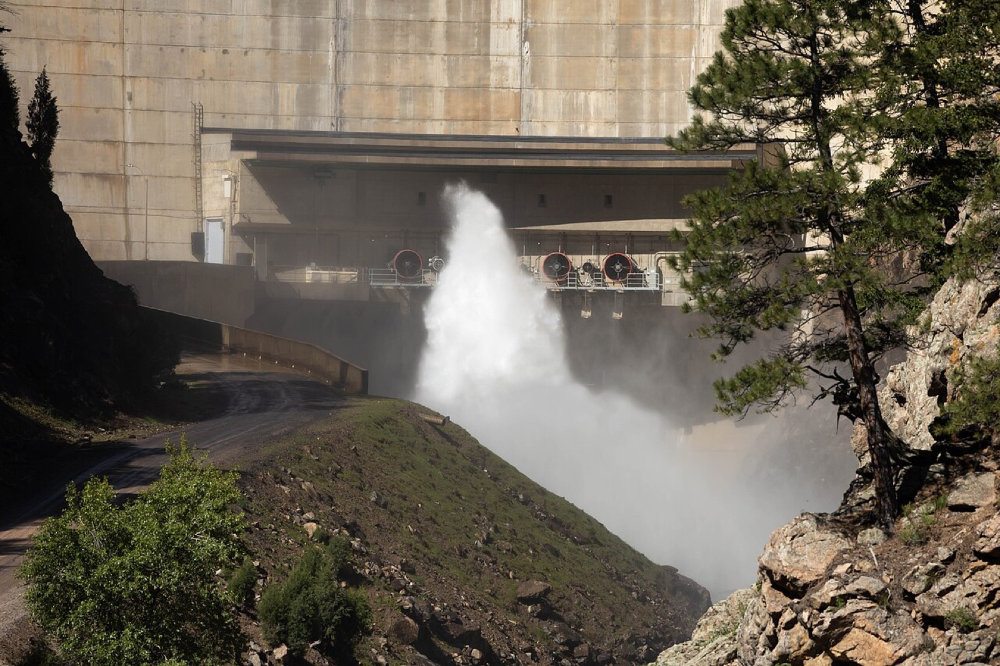

Explore DDD 2026 · Design Storm · Denver Water
Thirty days in which a storm upstream turned the South Platte brown, and a new instrument watched what happened next.
Until April 2026 there was one sensor in this story: a US Geological Survey gage sitting in the river above Strontia Springs Reservoir. In April, Denver Water lowered a second one inside the reservoir. The chart below puts them together for the first time.
The strip along the top is the river arriving. The block below it is the reservoir itself, drawn as a column of water from the surface down, one row per depth, with each day’s reading coloured by how cloudy the water was. The thin rail underneath is what the treatment plant measured in the water it received.
Figure 1 · 21 July to 19 August 2026
1 dayThe delay between the river spiking and the reservoir surface responding. Measured across all thirty days, surface cloudiness follows the river most closely at a one-day offset.
3–4 daysThe delay before mid-depth water responds. The muddy layer does not arrive at depth, it works its way down.
4 hoursHow long Denver Water’s raw water group says the water itself takes to travel from the gage to the plant. The days in this chart are the reservoir, not the river.
The US Geological Survey runs 1,332 river cameras, sixty of them in Colorado. None sits at Strontia Springs. The nearest on this river is twelve and a half miles above the reservoir, below Brush Creek near Trumbull, and it photographs the water every fifteen minutes in daylight. The archive is public, so we can look at the two middays either side of the storm.
Figure 2 · South Platte below Brush Creek near Trumbull

Friday 14 August, 12:00 · the day before
Clear water. The streambed is visible right across the channel, gravel and green weed and all.

Saturday 15 August, 12:16 · hours after the spike
Still clear. Same gravel, same weed, and someone standing in it fly fishing with a dog on the bank.
The flow record agrees with the photographs. Through the whole storm this gage held flat between 134 and 138 cubic feet per second, with no runoff pulse at all.
So whatever turned the water brown at the reservoir did not come down the upper South Platte. It entered somewhere in the thirteen miles below this camera: either the North Fork, which joins the main stem in that reach, or a side drainage closer to the dam. That is a question a team could chase with nothing but public data.
The reservoir is more than two hundred feet deep at the dam. The opening that sends water to the treatment plant sits within a few feet of the bottom. The new instrument reaches 48 feet down.
Figure 3 · Strontia Springs Reservoir in section
Figure 4 · Proposed general layout, Strontia Springs Dam, 1977

The hexagonal intake structure on the right bank is the one that matters here. It is the tower whose opening sits at 5,796 feet, and the dotted line leaving it is the ten-foot-six-inch Foothills Tunnel, which is the actual link from this reservoir to the treatment plant.
Aurora has its own intake alongside, with the Rampart Tunnel running off to its own system. The contour lines are twenty feet apart, labelled 5,780 up to 6,160, and the river channel between them is what settles how deep the reservoir really is: it runs between the 5,780 and 5,800 lines.
The three boxed elevations are construction works rather than natural ground: the stilling pool floor at 5,751, and the two cofferdams at 5,794 and 5,819 that held the river back while the dam was built.
Figure 5 · The outlet works, from downstream

The same valves that Figure 4 labels in plan, seen for real. Three ring-jet valves on their gallery at the foot of the arch, one of them running, throwing water into the plunge pool the drawing marks as the stilling pool at 5,751 feet. The gravel service road on the left is the only way in, which is part of why no public camera watches this place.
These are not the intake. The outlet works sends water down the river below the dam. The opening that feeds the treatment plant is the hexagonal tower on the other side, fifty feet deeper, and it is never visible from anywhere.
Figure 6 · The canyon at the dam, measured
Jake’s models have always needed a delay of several days between an upstream reading and the plant’s own measurement, even though the water physically makes the trip in about four hours. That gap has been explained as mixing inside the reservoir, but nobody could watch it happen. Figure 1 is the first direct look: the muddy layer arrives at the surface within a day and works downward over the next three or four. The delay is the reservoir, not the river.
Figure 3 is the part that reframes the question. The instrument is watching the top fifth of the water column. The plant drinks from the bottom. Whether that matters depends on something none of us can answer from the data.
Everything on this page that did not come from Denver Water’s own materials came from these, all of them publicly available.
Denver Water provisional data. The measurements shown here were provided by Denver Water for the Explore DDD 2026 Design Storm and are provisional and subject to revision. River and reservoir readings drawn from public federal and state sources are likewise provisional. Nothing here is an official Denver Water finding, and the interpretation is the authors’, not the utility’s.